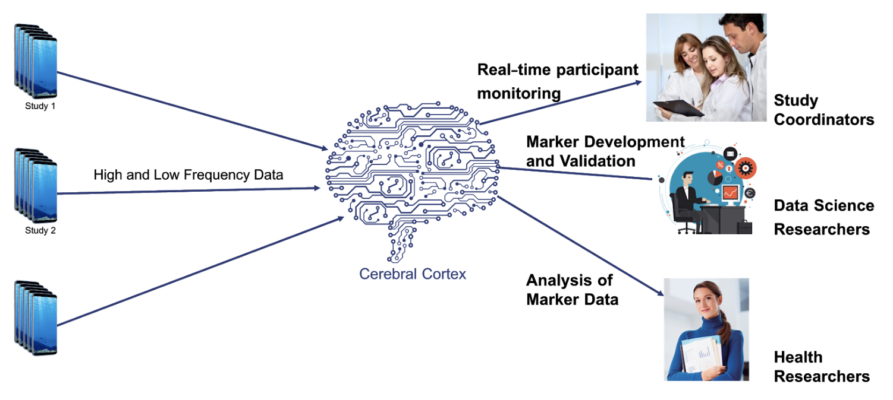

About
The mGuard project is supported by NSF Award #2019085.
mGuard aims to address two major data access challenges encountered by the NIH Center of Excellence for Mobile Sensor Data-to-Knowledge (MD2K) in its pursuit to share mobile health (mHealth) data among researchers who investigate a wide range of health and wellness issues. First, because wearable sensor data may expose privacy-sensitive information about a user, they should be accessed only by authorized users; currently this access control is largely handled manually, incurring high overhead and subject to human errors. Second, to enable real-time intervention for certain medical conditions, researchers need to retrieve and process the sensor data in real-time, which is not supported at this time.
mGuard tackles the above challenges by utilizing the results from the NSF-supported Named Data Networking (NDN) initiative, in particular the solutions that automate the cryptographic key management for data access control (name-based access control, or NAC) and the solutions that enable real-time synchronization among distributed datasets (NDN Sync). First, mGuard utilizes and extends NDN NAC to automate fine-grained access control of confidential data to authorized researchers. Second, it utilizes NDN Sync to provide real-time data production notification; based on this, it enables applications to publish and subscribe to data in real time by directly using MD2K data names. These new capabilities will be deployed in the MD2K cyberinfrastructure.
This effort enables the MD2K center to share its data securely and in real time with a large number of mHealth researchers. The transformative potential of mGuard thus extends across many types of digital interventions and many health domains. mGuard also encourages researchers in other areas of data-intensive applications to explore NDN’s data-centric solutions. To train the next generation, mGuard is creating undergraduate and graduate education materials including concrete examples and hands-on exercises, as well as training and outreach activities through online seminars, conference tutorials, mHealth training institute, and summer camps.
Published papers are maintained through the mGuard website, NDN website, MD2K website, and publishers’ websites. All of the software produced by the project is maintained in the NDN GitHub and mHealthHUB. Curriculum materials, program documentations, and user manuals are maintained on the mGuard project website. The trace data, simulation code, and evaluation results will be maintained on mGuard internal servers for a period of at least 10 years. Investigators will archive data, samples, and other research products, and preserve access to them at least five years beyond the project’s end date, subject to resource availability.
MD2K’s mHealth Data Collection and Distribution Process
System Diagram and Data Flow
(mGuard components shown in dashed rectangles, and the existing MD2K components in solid shaded rectangles.)
Login, Authenitcation, Data-Access Verification, Results